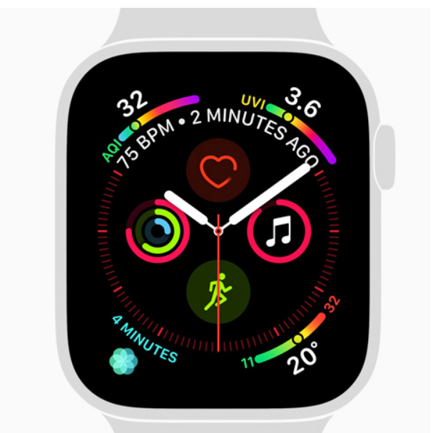

Change starts within.
Apple Watch Series 4. Fundamentally redesigned and re-engineered to help you be even more active, healthy and connected.

*Apple Music requires a subscription.
Some straps are sold separately.
Apple Watch Series 4 (GPS + Cellular) requires an iPhone 6 or later with iOS 12 or later. Apple Watch Series 4 (GPS) requires an iPhone 5s or later with iOS 12 or later. Apple Watch Series 3 (GPS + Cellular) requires an iPhone 6 or later with iOS 11 or later. Apple Watch Series 3 GPS) requires an iPhone 5s or later with iOS 11 or later.
Wireless service plan is required for cellular service. Apple Watch and iPhone service provider must be the same. Not available with all service providers. Not all service providers support enterprise accounts or prepaid plans; check with your employer and service provider. Some legacy plans may not be compatible. Roaming is not available. Contact your service provider for more details. Check www.apple.com/in/watch/cellular for participating wireless carriers and eligibility.
Apple Watch Series 4 has a water resistance rating of 50 metres under ISO standard 22810:2010. This means that it may be used for shallow-water activities like swimming in a pool or ocean. However, Apple Watch Series 4 should not be used for scuba diving, waterskiing or other activities involving high-velocity water or submersion below shallow depth.
Some features, applications and services may not be available in all regions or all languages. Click here to see complete list.